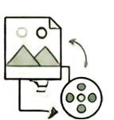
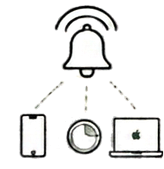
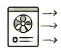

Cloud Media Shrinker
Find what is filling iCloud Photos, then compress large videos or remove what you do not need. Keeps HDR.
Mac appMac apps, everyday tools, and experiments that turn small frustrations into useful software.

Find what is filling iCloud Photos, then compress large videos or remove what you do not need. Keeps HDR.
Mac app
Ring Apple devices and AirTags from your Mac menu bar, widgets, or a keyboard shortcut.
Mac appPut interactive PlantUML diagrams into GitHub Markdown.
Developer toolOpen a Tuya gate from Mac and iPhone widgets through your own Mac bridge.
Home automationMonitor 3D printer progress from Mac and iPhone widgets.
3D printingTurn local Markdown files into native Mac widgets for daily briefs, checklists, and small dashboards.
Mac appExplore local AirTag location history with maps on your Mac.
Experimental Mac app
Local status monitoring and optional exhaust control for the Bambu H2D.
3D printingCompare the long-term numbers behind buying a home versus renting.
Web calculatorMove MP4 metadata to the front for faster streaming starts without re-encoding.
Developer tool